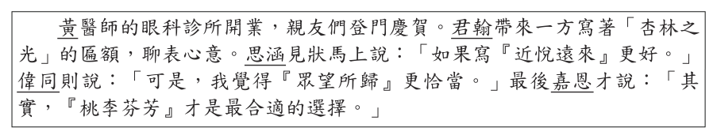
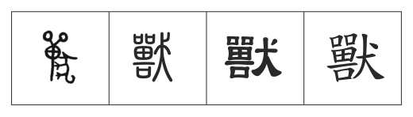
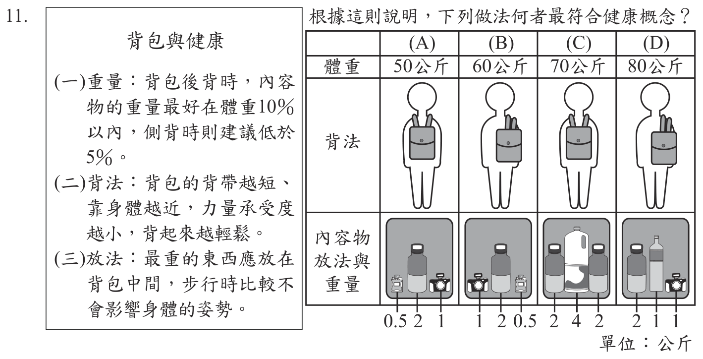
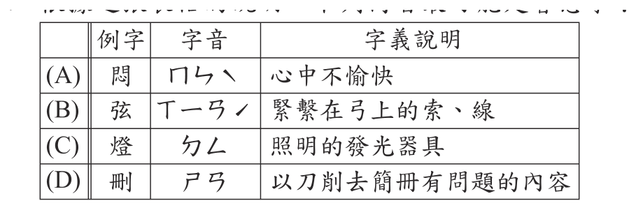
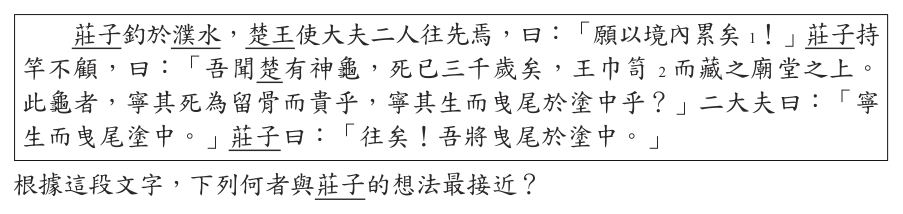
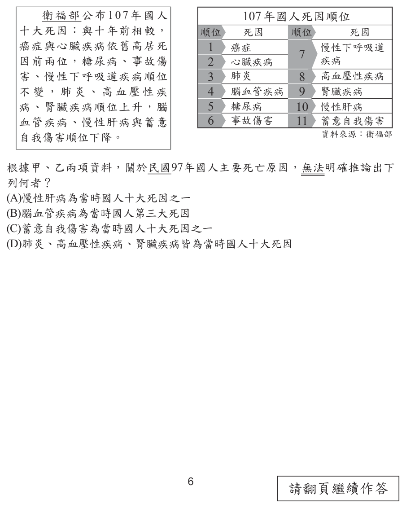
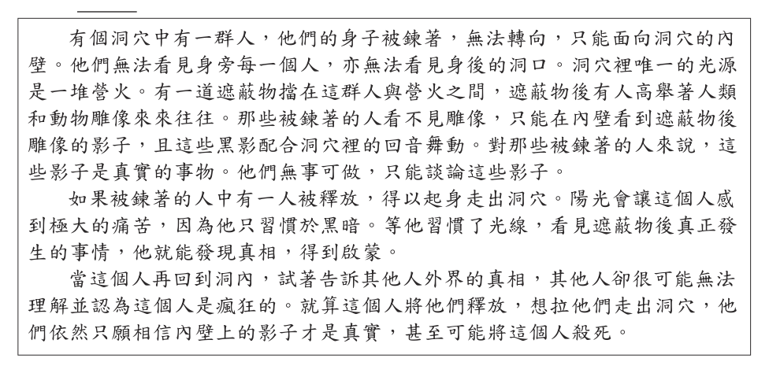

111 年國中教育會考國文試題與答案
這一頁是民國 111 年國中教育會考國文的整份歷屆試題，共 42 題，題目與標準答案出自心測中心 會考歷屆試題（依著作權法 §9，考試試題不受著作權保護），其中 42 題附有詳解。以下逐題列出題幹、選項與答案；要計時作答或記錄成績，請用線上練習。
線上作答這一科 →
全部 42 題
第 1 題
這張圖最可能在傳達下列何種訊息？

- （A）透過大量傳播，知識就會變成真理
- （B）與其獨自苦讀，不如多與他人交流
- （C）反覆誦讀，有助於將資訊內化為大腦深層的記憶
- （D）能統整所學並轉述給別人，才算是真正掌握知識
答案：（D）
詳解與考點
正解：圖示的流程由讀書、重新組織知識到用自己的方式說出來，最後才成為真知識，題眼在「統整後轉述」。能統整所學並轉述給別人，才表示真正掌握知識，故 D 為正解。
A：圖中沒有主張知識經大量傳播就會變成真理，錯誤。
B：圖示重點不是與他人交流，而是自己重新組織並說出知識，錯誤。
C：反覆誦讀未呈現圖中的「重新組織、轉述」步驟，錯誤。
本題考點：圖文訊息判讀——依箭頭流程找出起點、關鍵轉化與結果；核心訊息判準——選項須同時對應「重新組織」及「用自己的方式說出來」，不可只擷取讀書或記憶等局部概念。
第 2 題
黃醫師的眼科診所開業，親友們登門慶賀。君翰帶來一方寫著「杏林之光」的匾額，聊表心意。思涵見狀馬上說：「如果寫『近悅遠來』更好。」偉同則說：「可是，我覺得『眾望所歸』更恰當。」最後嘉恩才說：「其實，『桃李芬芳』才是最合適的選擇。」根據這段對話，誰的做法或說法最恰當？

- （A）君翰
- （B）思涵
- （C）偉同
- （D）嘉恩
答案：（A）
詳解與考點
正解：題眼是眼科診所開業賀詞，須選能稱頌醫術的用語。A「杏林之光」承「杏林春暖」典故，指醫術精湛，用於醫師開業最恰當，故 A 為正解。
B：「近悅遠來」指施政良好，使近處人民喜悅、遠方人民來歸，常用於政治或治理情境。
C：「眾望所歸」指為眾人所期望擁戴的對象，多用於領導者或人選。
D：「桃李芬芳」以桃李比喻學生的成就，適合祝賀教師或教育工作者。它看起來正面且喜氣，但對象是醫師而非教師。
本題考點：成語與典故的情境搭配——先辨識受賀者身分；醫師用杏林，教師用桃李，政治治理可用近悅遠來。
第 3 題
「臺灣原住民的布只有形制屬傳統或較現代的分別，像圓領的剪裁、鈕扣和棉布的使用等，都是受漢人的影響而來。泰雅族的貝珠鈴衣，是貝珠串底下加銅鈴裝飾，銅鈴也是和漢人交易而來。日治時代的原住民服裝，還出現以漢人棉布做底、日本布做袖口、原住民圖案做主要裝飾的混搭法。」這段文字的主旨最可能是下列何者？
- （A）不同文化的碰撞，可融合並產生新的火花
- （B）外來文化的入侵，讓在地的傳統文化日漸消失
- （C）臺灣原住民的文化，影響了漢人與日本人的穿著
- （D）觀察不同族群的服飾，就能了解不同文化的差異
答案：（A）
詳解與考點
正解：題幹依序舉圓領剪裁、鈕扣與棉布受漢人影響，銅鈴由與漢人交易而來，以及漢人棉布、日本布與原住民圖案混搭，重點是不同文化元素被融合使用。A「不同文化的碰撞，可融合並產生新的火花」概括全文主旨，故正確。
B：文中沒有說外來文化使傳統文化日漸消失，反而呈現混搭與融合。
C：影響方向倒置，文中是原住民服飾吸收漢人與日本元素。
D：文段重點不是比較各族群服飾差異，而是說明服飾的文化融合。
本題考點：閱讀主旨——統整多個事例反覆指向的共同概念；文化交流——見到外來材料、技術與在地圖案並置時，判斷是否呈現融合而非單向取代。
第 4 題
下表中的「獸」字依序最可能為何種字體？

- （A）金文 → 楷書 → 小篆 → 隸書
- （B）金文 → 小篆 → 隸書 → 楷書
- （C）小篆 → 隸書 → 金文 → 楷書
- （D）小篆 → 金文 → 楷書 → 隸書
答案：（B）
詳解與考點
正解：題幹要依字形判讀漢字演變；圖中字形先由最象形彎曲的金文，發展為筆畫勻整圓轉的小篆，再為橫平並有波磔的隸書，最後為方正的楷書，依序是金文→小篆→隸書→楷書，故 B 為正解。
A：把小篆與楷書的次序置換，且將楷書放在隸書之前，錯誤。
C：第一字的象形彎曲特徵應判為金文，不是小篆；第三字也不是早期的金文。
D：把金文與小篆的先後混淆，並將楷書、隸書的順序顛倒。它看起來對，是因為小篆與隸書都比楷書古，仍須依筆畫圓轉或波磔分辨。
本題考點：漢字字體演變——常用順序為金文→小篆→隸書→楷書；金文較象形，小篆線條勻整圓轉，隸書可見波磔，楷書字形方正。
第 5 題
「過去賭客玩拉霸機時，需要把紙鈔塞進機器裡，所以會看見皮夾裡的鈔票越來越少，能提醒自己適時收手。但現在他們用卡片玩拉霸機，卡片僅會記錄他們的輸贏情況。賭客難以意識到自己正不斷輸錢，只能隱約記得花了多少錢。」這段文字的主旨與下列何者最接近？
- （A）欲望會創造新的發明
- （B）科技的進步使生活更便利
- （C）長期沉溺於賭博之中容易讓人迷失自我
- （D）不用現金支付使人對花錢的感受變得較遲鈍
答案：（D）
詳解與考點
正解：題幹以拉霸機由投入現鈔改為刷卡為例，指出卡片只記錄輸贏，使賭客難以意識到自己持續花錢；主旨是不用現金支付會讓人對花錢的感受較遲鈍，故D為正解。
A：文章沒有討論欲望如何創造發明，錯誤。
B：文章重點不是科技使生活便利，而是付款形式改變金錢支出的感知，錯誤。
C：沉溺賭博可能是後果，但文章聚焦於刷卡使花錢感受變鈍的機制。它看起來對，是因為題材談賭博，卻沒有抓到主旨，錯誤。
本題考點：閱讀主旨——找出反覆說明的核心現象與原因，不以材料的題材代替主旨；抽象歸納——現金轉為卡片數字會弱化人對支出的直接感受。
第 6 題
下列體育新聞的說明何者錯誤？
- （A）東道主法國隊屈居第二：法國是主辦國
- （B）我國九局下逆轉，一分氣走韓國：我國轉輸為贏
- （C）波多黎各選手爆冷門奪金：各界看好波多黎各選手奪金
- （D）我國女將輕取哥倫比亞，晉級八強：我國女將大勝哥倫比亞
答案：（C）
詳解與考點
正解：題幹問錯誤說明，關鍵詞「爆冷門」指結果出乎意料，原先不被看好的一方獲勝。波多黎各選手爆冷門奪金，表示原本不受看好；C 卻說各界看好其奪金，語意相反，故 C 錯誤。
A：「東道主」指主辦國，法國為主辦國的說明正確。
B：「九局下逆轉，一分氣走」指最後以一分之差由輸轉贏，說明正確。
D：「輕取」指輕易獲勝、大勝，說明正確。
本題考點：新聞詞語理解——以詞語的固定語意回扣句子情境；「爆冷門」須有不被看好卻獲勝的反差，「逆轉」指由落後轉為領先。
第 7 題
「敘述記憶是件難事。記憶是一個整體，敘述的時候必須選擇將它一片片的切下，即使是一塊肉、一棵菜甲甲切下來後就再也拼不完整了，就算拼湊起來了乙乙也只算是死的標本，生命已蕩然丙丙何況記憶大部分的時候更像一陣風，來無影去無蹤的，要想將風片切下來，豈不完全是一場徒勞嗎丁丁」這段文字中的甲、乙、丙、丁四處，何者最適合使用標點符號中的句號？
- （A）甲
- （B）乙
- （C）丙
- （D）丁
答案：（C）
詳解與考點
正解：判斷句號位置，先看前後是否各自語意完整。丙前的「就算拼湊起來了，也只算是死的標本，生命已蕩然」已完成一個意思；丙後以「何況」另提出記憶像風、難以切割的新論點，故 C 最適合用句號。
A：「即使是一塊肉、一棵菜」與後面的「切下來後」尚未構成完整句意。
B：「就算拼湊起來了」仍須接「也只算是死的標本」，不可在此斷句。
D：全文以「豈不完全是一場徒勞嗎」作反問收束，應用問號。它看起來像句末，卻不是本題所問的句號位置。
本題考點：標點符號——句號用於完整句意的結束；連詞如「即使」、「就算」、「何況」要連同其所引出的語意單位判斷，不可只看停頓長短。
第 8 題
陸公嘗於市遇一佳硯，議價未定。既還邸，使門人往，以一金易歸。門人持硯歸，公訝其不類。門人堅證其是。公曰：「向觀硯有鴝鵒眼，今何無之？」答曰：「吾嫌其微凸，路遇石工，令磨而平之。」公大惋惜。下列關於故事中人物的敘述，何者最恰當？
- （A）門人買錯硯臺卻不知道
- （B）陸公惋惜是因石工技藝不佳
- （C）門人請人磨平硯眼是自作聰明
- （D）陸公對門人購硯的價格感到驚訝
答案：（C）
詳解與考點
正解：題眼在門人嫌鴝鵒眼微凸，竟請石工磨平。鴝鵒眼是佳硯珍貴的特徵，門人自以為改善外觀，實際毀掉其價值，故 C 的「自作聰明」最恰當。
A：門人買回的是同一方硯臺，只是已被磨去鴝鵒眼，並非買錯。
B：陸公惋惜的是珍貴硯眼被磨掉，不是石工技藝不佳。
D：陸公訝異硯臺外觀不類原先所見，沒有對價格感到驚訝。
本題考點：文言文閱讀理解——依人物行動與結果判斷評價；「嫌其微凸，令磨而平之」造成珍貴特徵消失，是好心辦壞事。
第 9 題
「美國有名男子在家中裝攝影機，24小時在網路上播放他的生活，因此成為名人，甚且登上雜誌封面。這透露著有些人不再介意被窺視，甚至樂於被窺視。人有時會覺得孤寂，希望被注意，讓人覺得自己很重要。那些被窺視的人，既然知道鏡頭在哪裡，是否會有表演的性質呢？」根據這段文字，下列何者最接近作者的觀點？
- （A）大眾的隱私權常常不受到尊重
- （B）網路直播者多少帶有表演性質
- （C）滿足他人偷窺欲就可成為名人
- （D）孤寂的人總是害怕他人的眼光
答案：（B）
詳解與考點
正解：題幹末句問「既然知道鏡頭在哪裡，是否會有表演的性質」，這是作者以直播者知道鏡頭存在為據所作的判斷傾向。B「網路直播者多少帶有表演性質」最接近作者觀點，故 B 正確。
A：文中談有些人不介意或樂於被窺視，沒有主張大眾隱私權常不受尊重。
C：文中沒有說滿足他人的偷窺欲就可以成為名人，這是過度推論。
D：文中說孤寂的人希望被注意，並非總是害怕他人眼光。
本題考點：閱讀觀點推論——以作者的結論句或設問句判斷觀點；避免過度推論——選項出現「常常」「就可」「總是」等絕對說法時，須檢查原文是否有足夠依據。
第 10 題
「名不可以倖取也。天下之事，固有外似而中實不然者。倖其似而竊其名，非不可以欺一時，然他日人即其似而求其真，則情現實吐，無不立敗。」下列何者最能與這段文字的意旨相呼應？
- （A）因其貌不揚被小看，沒想到靠著精湛演技成為影帝
- （B）不勞而獲的錢財，因為來得容易，往往被輕易揮霍
- （C）以作弊手段考上名校，最後卻因適應不良而中輟學業
- （D）當不切實際的夢想碰到冷酷的現實，也只能化為泡影
答案：（C）
詳解與考點
正解：題幹的關鍵在「倖其似而竊其名」與「求其真，則情現實吐」，說的是靠不正當手段取得名位，終會在受到實際檢驗時失敗。C 以作弊手段取得名校學生身分，最後卻因適應不良而中輟，呈現僥倖取得名位後終究難以維持的結構，最能呼應此意，故 C 為正解。
A：因外貌被低估後靠精湛演技成為影帝，是憑實力翻身，沒有僥倖竊名或敗露的情節。
B：不勞而獲的錢財被揮霍，重點在財物來得容易，沒有冒名與追究真相。
D：不切實際的夢想化為泡影，寫理想與現實落差，並非以假象取得名聲後被揭穿。
本題考點：文言主旨對應——先抓人物行為與結果的因果鏈；「倖取、竊名、情現實吐」的判準是以假象取得名位，終因受到實際檢驗而失敗。
第 11 題
根據這則說明，下列做法何者最符合健康概念？背包與健康 (一)重量：背包後背時，內容物的重量最好在體重10％以內，側背時則建議低於 5％。 (二)背法：背包的背帶越短、靠身體越近，力量承受度越小，背起來越輕鬆。 (三)放法：最重的東西應放在背包中間，步行時比較不會影響身體的姿勢。

本題選項為上圖中的 A／B／C／D，請對照圖片作答。
答案：（A）
詳解與考點
正解：題幹的關鍵條件是背包後背重量須在體重10％以內，且最重物應放在背包中間，必須同時核對重量比例與放法。A 中體重50公斤者背3.5公斤，3.5÷50=0.07=7％，未超過10％；又把最重物置中，符合說明，故 A 為正解。
B：背包的健康做法須同時符合重量與放法；B 未同時符合題幹條件，故不選。
C：體重70公斤後背的上限是70×10％=7公斤，背8公斤已超過上限1公斤，錯誤。
D：最重物未放在背包中間，步行時較易影響姿勢，不符放法原則，錯誤。
本題考點：健康背包判讀——後背重量以體重10％為上限，先算重量÷體重×100％；放置判準——最重物放背包中間，不能只因重量合格就判定做法正確。
第 12 題
下列選項「」中的字，何組讀音相同？
- （A）悲傷哽「咽」／食不下「咽」
- （B）悶不「吭」聲／引「吭」高歌
- （C）語帶「禪」機／「禪」讓政治
- （D）「撒」謊成習／恃寵「撒」嬌
答案：（D）
詳解與考點
正解：題眼是比較同一字在兩個詞中的教育部標準讀音。D 的「撒謊」與「撒嬌」的「撒」都讀 ㄙㄚ，讀音相同，故選 D。
A：「哽咽」的「咽」讀 ㄧㄝˋ；「食不下咽」的「咽」讀 ㄧㄢˋ，讀音不同。
B：「悶不吭聲」的「吭」讀 ㄏㄥ；「引吭高歌」的「吭」讀 ㄏㄤˊ，讀音不同。
C：「語帶禪機」的「禪」讀 ㄔㄢˊ；「禪讓」的「禪」讀 ㄕㄢˋ，讀音不同。它看起來對，是因為字形完全相同，但多音字會隨詞義改變讀音。
本題考點：多音字辨識——須連同詞語判讀讀音，不可只看單字字形；兩處讀音的聲母、韻母與聲調都要一致才算相同。
第 13 題
「所謂中菜西吃，是將原本大盤共享且同桌擺放的宴席菜式，改為西餐般一人一份、一道道依序送上。但中菜向來比西菜更講究沸熱燙口，分開上菜後，熱度鑊氣全消。其次，拋卻一桌多道同食，享受各種味道交錯的樂趣。更嚴重的是，為了美觀便利，連烹調手法都起了變化。例如原本該整魚整肉整蔬大鍋蒸煮煨燉，卻改為小塊小盅個別處理，光這點就足以讓同冶一爐、渾然一體之味傷損逸散。」根據這段文字，作者不愛中菜西吃的原因最不可能包含下列何者？
- （A）中式食法多道並陳，西式則否
- （B）中菜較西菜更講究菜餚的熱度
- （C）西餐的上菜速度及料理方式費時又費工
- （D）西式食法盡失中菜大鍋烹煮整肉的風味
答案：（C）
詳解與考點
正解：題幹問「最不可能包含」，須回到原文核對作者實際提出的反對理由。C 說西餐上菜速度及料理方式費時費工，文中未提西餐費時費工；作者批評的是中菜改採西式分餐後失去的特質，故 C 為正解。
A：原文說中菜原本「大盤共享且同桌擺放」，改為一道道依序送上，確有中式多道同食與西式分道上菜的對比。
B：原文直接指出中菜比西菜更講究「沸熱燙口」，分開上菜會使熱度、鑊氣消失。
D：原文以整魚、整肉、整蔬的大鍋蒸煮煨燉，對比小塊小盅個別處理，說明風味會傷損逸散。
本題考點：閱讀理解的未提及判斷——逐項找原文依據；原文說明中菜西吃造成熱度、同食樂趣與整體風味的流失，未說西餐費時費工。
第 14 題
「修身以為弓，矯思以為矢，立義以為的，定而後發，發必中矣。」句中「矯」字的意義，與下列何者最接近？
- （A）「矯」世勵俗
- （B）「矯」若遊龍
- （C）「矯」捷身手
- （D）「矯」託天命
答案：（A）
詳解與考點
正解：題眼是「矯思以為矢」，「矯」用在思維上，意為矯正、糾正。A「矯世勵俗」是矯正世風、勉勵風俗，字義相同，故 A 為正解。
B：「矯若遊龍」的「矯」形容姿態矯健如游龍，非矯正。
C：「矯捷」指身手強健敏捷，非糾正。它看起來對，是因為 B、C 都有「矯」字，但此處都取矯健義。
D：「矯託」指假借、偽稱天命，非矯正。
本題考點：一字多義辨析——代入語境判斷詞義；「矯」用於世風、思維時多為矯正義，用於姿態、身手時多為矯健義。
第 15 題
下列文句中的成語，何者使用最恰當？
- （A）這艘郵輪車水馬龍，可搭載數千名遊客
- （B）他個性害羞，遇到陌生人時總是別開生面
- （C）他為了得到好成績而因噎廢食，每晚都認真讀書
- （D）這裡曾有許多珍藏，如今僅剩吉光片羽，令人唏噓
答案：（D）
詳解與考點
正解：題幹要判斷成語是否符合語境與搭配對象。D「吉光片羽」指珍貴的殘餘遺物，寫許多珍藏如今僅剩少數，使用恰當，故 D 為正解。
A：「車水馬龍」形容道路上車馬往來繁多，不用來形容一艘郵輪可搭載許多遊客。
B：「別開生面」指另創新奇的局面或形式，不是形容人害羞。
C：「因噎廢食」指因怕噎住而不吃飯，比喻因小挫折而放棄應做之事；句中為了成績每晚認真讀書，語意相反。它看起來對，是因為句子也談讀書與成績，但成語的放棄義恰與後文衝突。
本題考點：成語運用——先掌握本義，再核對搭配對象與上下文方向；「吉光片羽」可形容珍貴遺存，「因噎廢食」則含因挫折而放棄之義。
第 16 題
某古典戲曲中有一段唱詞：「俺讀些稗官詞寄牢騷，對江山吃一斗苦松醪 1。小鼓兒顫杖輕敲，寸板兒軟手頻搖。一字字臣忠子孝，一聲聲龍吟虎嘯。快舌尖鋼刀出鞘，響喉嚨轟雷烈炮。呀！似這般冷嘲、熱挑，用不著筆抄、墨描，勸英豪一盤錯帳速勾了。」據此判斷，唱詞中「俺」的職業最可能是下列何者？
- （A）說書人
- （B）算命師
- （C）外交使臣
- （D）監察御史
答案：（A）
詳解與考點
正解：題幹中的「讀些稗官詞」、「小鼓兒」「寸板兒」及「用不著筆抄、墨描」，指出以鼓板配合口頭演述故事的工作。A 說書人會說唱稗官故事、敲鼓板表演，最符合唱詞，故 A 為正解。
B：算命師雖可能靠口語說明，卻不以稗官詞、鼓板與忠孝故事為職業內容。
C：外交使臣負責國與國之間的交涉，與說唱、鼓板無關。
D：監察御史職掌監察與糾彈，並非以口頭演述故事維生。它看起來對，是因為「勸英豪」有勸誡意味，但前後的鼓板、稗官詞才是職業判準。
本題考點：文本推論——從器具、表演方式與內容交叉判斷身分；鼓、板加上稗官詞與口述演唱，是說書人的典型線索。
第 17 題
下列文句，何者文意通暢、用詞最為恰當？
- （A）此文件攸關計畫的成敗，你千萬要小心遞送
- （B）在遇到困難時，他反而不屈不撓，堅持妥協
- （C）他明明做錯事情還推給別人，真是死不賴帳
- （D）疫情蔓延的時候，我們更要一起對抗意志力
答案：（A）
詳解與考點
正解：題幹要求文意通暢、用詞恰當；A 的「攸關」指關係重大，與「計畫的成敗」搭配合理，「小心遞送」也符合文件的重要性，故 A 為正解。
B：「不屈不撓」指堅持不退讓，「妥協」指讓步，兩者語意相反，不能說「堅持妥協」，錯誤。
C：「死不賴帳」指欠債不肯認帳；句中是做錯事卻推給別人，應說「死不認帳」，錯誤。它看起來對，是因為兩語都含有不肯承認的意思，但「賴帳」限於帳務情境。
D：疫情期間應對抗病毒或傳染，而非「對抗意志力」，搭配對象不當，錯誤。
本題考點：詞語搭配——依詞義判斷詞與受詞能否合理連用；反義衝突——同一句若同時出現「不屈不撓」與「妥協」等相反語意，須檢查是否矛盾；慣用語辨析——「賴帳」專指帳款問題。
第 18 題
「粥之既熟，水米成交，猶米之釀而為酒矣。慮其太厚而入水於粥，猶入水於酒也，水入而酒成糟粕，其味尚可咀乎？故熬前挹水必限以數，使其勺不能增，滴無可減。」根據這段文字，作者對於熬粥的看法，下列敘述何者最恰當？
- （A）熬煮前須加足適量的水
- （B）熬煮時可適度添加米飯
- （C）熬煮過程中可加酒提味
- （D）熬煮過久容易生出糟粕
答案：（A）
詳解與考點
正解：題幹以「熬前挹水必限以數」指出加水時機與分量，觸發文意判讀；粥煮熟後再加水，如同酒中加水而成糟粕，所以熬煮前就須加足適量的水，故 A 為正解。
B：文中只談加水，未提熬煮時添加米飯。
C：文中以酒作比喻，沒有主張加酒提味。
D：糟粕是酒成後再加水所致，不是熬粥過久所生。它看起來對，是因為「糟粕」緊接在熬粥的比喻後出現，卻誤把酒的變化當成粥熬太久的結果。
本題考點：文言文因果判讀——「故」後的結論可用來回推作者主張；熬粥方法——水應在熬前按定量加入，熟後再加水會破壞原有濃稠度。
第 19 題
下列詞語「」中的注音寫成國字後，何者兩兩相同？
- （A）杞人「ㄧㄡ」天／養尊處「ㄧㄡ」
- （B）「ㄅㄢ」駁陸離／「ㄅㄢ」斕奪目
- （C）自相「ㄇㄠˊ」盾／「ㄇㄠˊ」塞頓開
- （D）細嚼「ㄇㄢˋ」嚥／「ㄇㄢˋ」不經心
答案：（B）
詳解與考點
正解：題幹要求把注音寫成國字後，兩處必須是同一個字。B「斑駁陸離」與「斑斕奪目」都寫作「斑」，故 B 為正解。
A：「杞人憂天」是「憂」，「養尊處優」是「優」，讀音同為ㄧㄡ，字形不同。
C：「自相矛盾」是「矛」，「茅塞頓開」是「茅」，字形不同。
D：「細嚼慢嚥」是「慢」，「漫不經心」是「漫」，字形不同。
本題考點：注音與國字辨識——不能只比讀音，須將詞語還原為正確國字後比對；「斑駁」與「斑斕」同為「斑」，其餘各組皆為同音或近音異字。
第 20 題
「江南二月試羅衣 1，春盡燕山雪尚飛。應是子規 2 啼不到，故鄉雖好不思歸。」關於這首詩的分析，下列說明何者最恰當？
- （A）就體裁而言，這是一首七言律詩
- （B）就形式而言，對仗工整，句句押韻
- （C）以「試羅衣」、「雪尚飛」對比兩地氣候差異
- （D）以遊子口吻寫出羈旅在外、難以返回的鄉愁
答案：（C）
詳解與考點
正解：題眼是「江南二月試羅衣」與「春盡燕山雪尚飛」的並列，前者寫江南二月已可試穿春衣，後者寫燕山春盡仍降雪。C 正確指出兩句對比南北氣候差異，故 C 為正解。
A：全詩四句、每句七字，屬七言絕句，不是八句的七言律詩。
B：全詩不是句句對仗；「衣」、「飛」、「歸」押韻，第三句句末的「到」不押韻，因此並非句句押韻。
D：末句說「故鄉雖好不思歸」，是主動不想回去，不是羈旅在外而難以返回。它看起來對，是因為詩中有故鄉與燕山，容易聯想到思鄉，但「不思歸」正否定此解。
本題考點：詩歌內容與形式——以關鍵意象判讀對比關係；四句七字為七言絕句，詩意須依「不思歸」等明確字詞判定。
第 21 題
根據這張表格的說明，下列何者最可能是會意字？

本題選項為上圖中的 A／B／C／D，請對照圖片作答。
答案：（D）
詳解與考點
正解：題眼是會意字由兩個意符會合成新義。D「刪」從刀、冊，以刀削去簡冊上的內容，兩個意符共同表義，屬會意字，故 D 為正解。
A：「悶」以「門」表音、「心」表義，屬形聲字。
B：「弦」以「玄」表音，屬形聲字。
C：「燈」以「登」表音、「火」表義，屬形聲字。它看起來容易混淆，是因為形聲字也由兩部分組成，仍須辨別其中一部分是否負責表音。
本題考點：六書辨識——會意字由意符合成字義，形聲字則由形旁表義、聲旁表音；判斷時先檢查部件能否各自參與表義。
第 22 題
「學者如取水，終日取而不能踰其量，故操瓢者止於瓢，操盎者止於盎；教者如分火，終日分而未嘗虧其體，故散為十燈而明自若，散為千燈而明自若。故善學者 ________，善教者________。」根據文意脈絡，畫線處依序填入下列何者最恰當？
- （A）不自隘其器／不自吝其光
- （B）如逆水行舟／似雪中取火
- （C）宜自知其量／宜自晦其光
- （D）無一時之患／有終身之憂
答案：（A）
詳解與考點
正解：題幹以取水比喻學習受器量限制，以分火比喻教學傳授不減本體。A「不自隘其器」是不自行限縮器量，呼應善學者應擴充學習容量；「不自吝其光」是不吝惜光亮，呼應善教者應樂於傳授，故 A 為正解。
B：「如逆水行舟／似雪中取火」未分別扣合器量與分火的比喻。
C：「宜自知其量／宜自晦其光」分別主張限量與藏光，方向都與擴充器量、分享光亮相反。它看起來對，是因為「自知其量」近似謙遜，但文意強調不可自限。
D：「無一時之患／有終身之憂」沒有回應取水、分火的類比。
本題考點：類比推論——先找本體與喻體的對應；取水受器量所限，故學習不可自限，分火不損火體，故教學不可吝於傳授。
第 23 題
莊子釣於濮水，楚王使大夫二人往先焉，曰：「願以境內累矣 1！」莊子持竿不顧，曰：「吾聞楚有神龜，死已三千歲矣，王巾笥 2 而藏之廟堂之上。此龜者，寧其死為留骨而貴乎，寧其生而曳尾於塗中乎？」二大夫曰：「寧生而曳尾塗中。」莊子曰：「往矣！吾將曳尾於塗中。」根據這段文字，下列何者與莊子的想法最接近？

- （A）人死留名，虎死留皮
- （B）不慕榮利，唯願逍遙
- （C）神龜雖壽，猶有竟時
- （D）寧鳴而死，不默而生
答案：（B）
詳解與考點
正解：莊子以神龜為喻：牠寧願活著在泥中曳尾，也不願死後留下龜殼被供奉；莊子藉此表明自己寧願自由生活、不願入仕求榮。B「不慕榮利，唯願逍遙」最接近其想法。
A：「人死留名，虎死留皮」重視死後留名，與莊子寧生於塗中、拒絕榮貴的取向相反，錯誤。
C：「神龜雖壽，猶有竟時」在說壽命終有限，非本文用神龜比喻自由與仕宦選擇的重點，錯誤。
D：「寧鳴而死，不默而生」強調勇於發言或諫言，與莊子不慕名位、追求逍遙的思想不同，錯誤。
本題考點：文言寓意推論——先辨識譬喻中的選擇，再對應人物價值觀；莊子思想——重視自由逍遙，不以功名富貴為人生目標。
第 24 題
「世人之事君者，皆以孫叔敖之遇楚莊王為幸，自有道者論之則不然，此楚國之幸。楚莊王好周遊田獵，馳騁弋射，歡樂無遺，盡付其境內之勞與諸侯之憂於孫叔敖。孫叔敖日夜不息，不得顧及養生之事，故使莊王功績著乎竹帛，傳乎後世。」關於這段文字的寫作手法，下列說明何者最恰當？
- （A）先提出世俗看法，再以不同論點反駁
- （B）先從正、反兩面論述，再另舉他例說明
- （C）先記敘孫叔敖事蹟，再評論楚莊王功績
- （D）先以楚莊王觀點闡述，再從孫叔敖立場反駁
答案：（A）
詳解與考點
正解：開頭先寫「世人」以孫叔敖遇楚莊王為幸，接著用「自有道者論之則不然，此楚國之幸」提出相反觀點；後文再以楚莊王逸樂、孫叔敖日夜勤政加以論證，故 A 為正解。
B：文章不是先從正、反兩面並列論述後另舉他例，而是先提出世俗看法，再反駁並用同一事例說明，錯誤。
C：孫叔敖與楚莊王的事蹟是在前段論點之後作為論據，不是先記敘後評論，錯誤。
D：開頭是轉述「世人」觀點，不是楚莊王的觀點；後文也不是站在孫叔敖立場反駁，錯誤。
本題考點：論述結構——先辨識作者引述的既有看法，再找轉折語如「則不然」判斷反駁；論據作用——人物行為事例可用來支撐前已提出的主張。
第 25 題
【甲】【乙】衛福部公布1 0 7年國人十大死因：與十年前相較，癌症與心臟疾病依舊高居死因前兩位，糖尿病、事故傷害、慢性下呼吸道疾病順位不變，肺炎、高血壓性疾病、腎臟疾病順位上升，腦血管疾病、慢性肝病與蓄意自我傷害順位下降。根據甲、乙兩項資料，關於民國97年國人主要死亡原因，無法明確推論出下列何者？

- （A）慢性肝病為當時國人十大死因之一
- （B）腦血管疾病為當時國人第三大死因
- （C）蓄意自我傷害為當時國人十大死因之一
- （D）肺炎、高血壓性疾病、腎臟疾病皆為當時國人十大死因
答案：（D）
詳解與考點
正解：題幹比較民國107年與10年前的十大死因順位，判斷時要分清「順位上升」只表示相對名次變動，不能直接推出原先是否列入十大。D 所列肺炎、高血壓性疾病、腎臟疾病雖在107年順位上升，但僅憑此無法明確推論三者在民國97年皆為十大死因，故 D 為正解。
A：慢性肝病順位下降，表示兩個比較年度皆有可供比較的十大死因順位，可推知民國97年列入十大。
B：依題組資料比對腦血管疾病的順位變化，可判定其在民國97年的相對名次。
C：蓄意自我傷害順位下降，同樣表示民國97年已列入十大死因。
本題考點：圖表資訊推論限制——只可推出資料直接提供或必然導出的結論；「順位上升」不等於原本必在同一排名範圍內，須先核對各年度的完整名次資料。
第 26 題待校
根據這張海報，下列關於綠能家電診所維修內容的敘述，何者最恰當？
- （A）可電話預約時間，專人到府收件
- （B）維修費用依家電的大小而有不同
- （C）只要維修合於規定的家電，都需繳交工本費
- （D）領件時若未攜帶取貨聯單，可以維修單代替
答案：（C）
詳解與考點
正解：題幹要依海報的維修規定判讀；海報註明「限10種小家電，每件酌收50元工本費」，只要是符合規定的家電，每件都要繳交工本費，故 C 為正解。
A：海報未提電話預約或專人到府收件，不能自行推論有此服務，錯誤。
B：工本費為每件50元，並非依家電大小而不同，錯誤。
D：海報要求憑取貨聯單領件，未說可用維修單代替，錯誤。它看起來對，是因為兩者都可能記載維修資料，但須以海報明載的領件憑證為準。
本題考點：圖表資訊判讀——逐項核對海報明載的對象、費用與流程；條件限制——「限10種小家電」與「每件50元」須完整保留，未載資訊不可自行補充。
第 27 題
下列四人聲稱曾到綠能家電診所送修電器，何人所述與這張海報的內容最相符？
- （A）小強：週一 14：00 送修咖啡機，週四 09：00 就拿到了
- （B）小顏：週三 10：00 送修飲水機，週五 13：00 就領件了
- （C）小燕：週六 16：00 送修電子鍋，接到通知後憑取貨聯單領回
- （D）小龍：週二 08：00 送修熱水瓶，先繳交50元特殊材料費才能檢修
答案：（C）
詳解與考點
正解：題眼在海報右下角的「收領件時間 08:00~12:00、13:00~16:30【週三、日及國定假日休診】」與維修流程最後一格「攜帶取貨聯單領回」。小燕週六 16:00 送修，週六不是休診日，16:00 也落在下午 13:00～16:30 的收件時段內；電子鍋屬於維修項目第 4 項「電鍋（含電子鍋）」；領回方式又與流程「完修電話通知領回→攜帶取貨聯單領回」完全相符，四個條件全數命中，故 C 為正解。
A：咖啡機不在海報所列的 10 種家庭用小家電（電風扇、吹風機、烤箱、電鍋、飲水機、果汁機、熱水瓶、檯燈、烘碗機、快煮壺）之內，診所不受理維修，錯誤。
B：海報明載週三休診，週三 10:00 根本無法送修飲水機，時間條件先就不成立，錯誤。
D：熱水瓶確實在維修項目內、週二 08:00 也在收件時間內，但檢修前收的是備註所說「每件酌收50 元工本費」；特殊材料費要等拆解檢修後另行報價，領件時才繳交，把兩種費用與收取時點混為一談，錯誤。
本題考點：圖表訊息比對——先把敘述句拆成「時間、品項、費用、領件方式」四個條件，再逐條回到海報對應欄位（收領件時間與休診日、維修項目 10 種清單、備註工本費、維修流程箭頭順序）核對，任一條件不符即淘汰；費用類敘述要特別分辨「工本費」與「特殊材料費」的金額與收取時點不同。
第 28 題
根據本文，關於畫線處所象徵的意義，下列說明何者最不恰當？
- （A）甲句中「每一個坑洞」：人生不同的挑戰
- （B）乙句中「方正的直角」：作者獨特的個性
- （C）丙句中「紙」：作者自己的本質
- （D）丁句中「蟑螂」：卑鄙惡劣的個人特質
答案：（D）
詳解與考點
正解：題眼是主管說「需要的是蟑螂、是老鼠」前，先說這是一個叢林，稀有動物無法生存；此處以動物比喻職場中能適應環境、存活下來的人。D 將「蟑螂」解為卑鄙惡劣的個人特質，忽略上下文的生存適應意義，最不恰當，故 D 為正解。
A：「每一個坑洞」指人生預備的不同處境與挑戰，作者試圖改變自己以求符合。
B：「方正的直角」指作者原有、較不圓滑的獨特個性。
C：「紙」貫串摺疊與磨損的比喻，指作者自身的本質。
本題考點：象徵義判讀——須用前後語境決定比喻意義；動物形象在本文重點是環境適應與生存能力，不能只憑日常的負面聯想判斷。
第 29 題
作者透過本文所抒發的感慨，與下列何者最接近？
- （A）要到失去之後，才知道曾經擁有的美好
- （B）為了他人而改變自己，最後卻迷失自我
- （C）年輕時未確定方向，等到一事無成才後悔莫及
- （D）曾經轟轟烈烈的絢爛，誰知到頭來都是一場空
答案：（B）
詳解與考點
正解：題眼是作者反覆把自己摺成不同形狀以迎合圓滑或有稜角的人，最後仍不知道下次該變成什麼樣子。B「為了他人而改變自己，最後卻迷失自我」完整概括全文感慨，故 B 為正解。
A：文中雖寫獨角仙後來不知去向，但重心不在失去珍藏後的追悔。
C：作者困惑的是為迎合環境改變自己，不是年輕未定方向、年老一事無成。
D：文中提到公司追求特立獨行，並未寫曾經絢爛終成空。它看起來對，是因為有「轟轟烈烈」一詞，但那只是舊公司宣告的生活宗旨。
本題考點：散文主旨——找反覆出現的核心意象與結尾困惑；「摺成不同形狀」象徵迎合他人，結果是自我迷失。
第 30 題
關於小說中畫線處文句的說明，下列何者最恰當？
- （A）甲：政府對人民的監控就像陽光一樣無孔不入
- （B）乙：長時間的緊繃，讓人變得冷酷麻木
- （C）丙：政府假稱瘟疫以掩蓋屠殺人民的真相
- （D）丁：巡邏隊刻意威嚇居民，製造恐懼與猜疑
答案：（B）
詳解與考點
正解：題眼是乙句「經過這長久下來的警戒」後，眾人聽見痛苦呻吟仍「置若罔聞」。B 正確說明長期緊繃使人冷酷、麻木，故 B 為正解。
A：甲句把陽光寫成追逐、出擊的人，是擬人化暑熱的壓迫，非政府監控。
C：丙句明說因燠熱與恐懼，事情被誇大而有死亡傳聞，沒有政府假稱瘟疫屠殺人民。
D：丁句寫巡邏隊過後城區陷入猜疑寂靜，重點是瘟疫與封城造成的氛圍，非巡邏隊刻意製造恐懼。
本題考點：小說語句理解——先辨識修辭與敘事事實；「置若罔聞」是對痛苦不加理會，結合長久警戒可判定為心理麻木。
第 31 題
對小說中的政府而言，「最壞情況」所指的最可能是下列何者？
- （A）人心彼此猜疑，不再相互信任
- （B）氣溫持續上升，民眾難以忍受
- （C）疫情不斷惡化，人們失去求生欲
- （D）群眾發生暴動，突破城門封鎖線
答案：（D）
詳解與考點
正解：題眼是政府「認真考慮了萬一這群被困在疫病當中的民眾發生暴動，應該採取哪些措施」。D 的群眾暴動、突破城門封鎖線，正是政府所憂慮的最壞情況，故 D 為正解。
A：人心猜疑是文中已有的氣氛，並非政府接著部署措施時所指的最壞情況。
B：暑熱加劇雖使民眾不適，文中未說政府針對氣溫制定防範措施。
C：疫情惡化與求生欲下降不是引文直接點出的政府顧慮。它看起來合理，是因為背景確有瘟疫，但「發生暴動」已明確限定答案。
本題考點：小說情節推論——優先以文本明示語句作答；政府發布禁令、派巡邏隊，皆與防範被困民眾暴動相呼應。
第 32 題
根據本文，關於美秀美術館，最不可能推論出下列何者？
- （A）美術館坐落在山間
- （B）對環境清潔有高度的要求
- （C）館區的電動車由機械人駕駛
- （D）接待中心與美術館有一段距離
答案：（C）
詳解與考點
正解：題幹問「最不可能推論」，要區分文本明示事實與作者的想像。文中說駕駛表情肅穆，使作者「不禁令人懷疑」是否為機械人，這只是聯想，未證實由機械人駕駛，故 C 最不可能推論。
A：文中有青山綠水、蟲鳴鳥叫，可推知美術館坐落在山間，錯誤。
B：館方對白色電動車、清潔用品與雨傘色彩皆有嚴格要求，可推知對環境清潔有高度要求，錯誤。
D：電動車穿梭接待中心與美術館之間，可推知兩處有一段距離，錯誤。
本題考點：文本推論界限——可由明示線索作合理推論，不能把比喻、懷疑或想像當成事實；「最不可能」判斷——逐項找原文依據，沒有依據者即為答案。
第 33 題
根據本文，下列何者最能體現美秀美術館的烏托邦式美學？
- （A）工作人員親切的微笑，流露內心的祥和
- （B）降低人為聲音的干擾，以呈現寧靜氛圍
- （C）所有物件一律為白色，象徵藝術的純淨
- （D）讓觀眾貼近展品，顯現人與藝術無隔閡請閱讀以下短文，並
答案：（B）
詳解與考點
正解：題眼是白色電動車安靜運作，不干擾青山綠水間的蟲鳴鳥叫，使美術館呈現寧靜氛圍。B 正確概括以降低人為聲音干擾體現烏托邦式美學，故 B 為正解。
A：文中寫駕駛表情肅穆，沒有親切微笑。
C：電動車與制服是白色，但雨傘是赭紅色，並非所有物件一律為白色。
D：文中沒有提到觀眾貼近展品或人與藝術無隔閡。
本題考點：閱讀理解——將抽象概念還原為原文具體作法；烏托邦式美學在本文表現為安靜運輸、整潔服務與視覺統一，其中寧靜氛圍最直接。
第 34 題
根據本文，作者認為紙本書對一般人的獨特價值最可能是下列何者？
- （A）紙本書才能傳承經典與藝術
- （B）閱讀紙本書不受晝夜的限制
- （C）紙本書可讓文字散發不同的渲染力
- （D）城鄉數位落差因紙本書才得以彌補
答案：（C）
詳解與考點
正解：題幹問紙本書對一般人的獨特價值，題眼是作者以「黑夜」比喻紙本閱讀，並以古詩印在紙本書與電子書有截然不同的氣場為例。這說明紙本書可讓文字散發不同的渲染力，故 C 為正解。
A：作者沒有說只有紙本書才能傳承經典與藝術；「才能」過於絕對，錯誤。
B：本文以白晝、黑夜作為閱讀特質的比喻，未主張紙本閱讀不受晝夜限制，錯誤。
D：城鄉數位落差不是本文論述重點，不能由文中推出，錯誤。
本題考點：議論文論點擷取——先找作者反覆闡述的核心比喻與例證；選項檢核——符合主旨且有文本證據者才可選，含有絕對語氣或轉移焦點者須排除。
第 35 題
關於本文的寫作分析，下列敘述何者最恰當？
- （A）以多面向的特質比較來強調數位資訊不如紙本
- （B）用夜以繼日來說明紙本閱讀是數位閱讀的延續
- （C）透過圖表的分析，陳述紙本閱讀無限發展的可能
- （D）藉由晝夜的對照，表達紙本與數位閱讀應該並存
答案：（D）
詳解與考點
正解：題眼是作者以白晝比喻數位及網路閱讀、以黑夜比喻紙本閱讀，並說人類需要代表白晝與黑夜的閱讀並存。D 正確說明作者藉晝夜對照表達兩種閱讀應並存，故 D 為正解。
A：作者承認網路、手機可提供訊息、知識與多媒體樂趣，並非斷言數位資訊不如紙本。
B：「夜以繼日」不是本文的比喻關係，紙本閱讀也不是數位閱讀的延續。
C：文中圖像用來整理兩種閱讀的特質，沒有陳述紙本閱讀無限發展的可能。
本題考點：寫作手法分析——辨識比喻兩端與作者結論；白晝、黑夜分別喻數位、紙本閱讀，對照目的在說明兩者各有不可取代的需求。
第 36 題
假設右圖是寓言中所指的洞穴，則根據寓言的內容，甲、乙、丙三處依序最可能是下列何者？

- （A）被鍊著的人／營火／舉雕像的人
- （B）被鍊著的人／舉雕像的人／營火
- （C）舉雕像的人／營火／被鍊著的人
- （D）舉雕像的人／被鍊著的人／營火
答案：（B）
詳解與考點
正解：題眼是被鍊者只能面向洞穴內壁，遮蔽物後有人舉雕像，唯一光源營火在更後方。依洞內到洞口的配置，甲是被鍊著的人，乙是舉雕像的人，丙是營火，故 B 為正解。
A：把乙、丙的位置對調，忽略舉雕像者位於被鍊者與營火之間。
C：把被鍊者放在最後方，與其面向內壁、背對洞口的設定不符。
D：同時誤置了舉雕像者、被鍊者與營火的位置。它看起來容易選錯，是因為要同時記住光源在最後方、遮蔽物與舉像者居中。
本題考點：圖文對應——依敘事的空間順序定位；內壁前是被鍊者，中間是舉雕像者與遮蔽物，後方才是營火。
第 37 題
在這則寓言中，「這個走出洞穴後再回到洞內的人」最可能是象徵下列哪一種人？
- （A）受迫的奴隸
- （B）孤獨的先知
- （C）命運的主宰
- （D）蒙昧的愚者
答案：（B）
詳解與考點
正解：題眼是此人走出洞穴後看見真相、獲得啟蒙，回洞告訴眾人卻不被理解，甚至可能被殺。B「孤獨的先知」最能象徵帶著真理卻不被大眾接受的人，故 B 為正解。
A：受迫的奴隸對應仍被鍊著、只能看影子的人，不是已走出洞穴者。
C：走出洞穴者雖看見真相，並沒有主宰他人命運的權力。
D：蒙昧的愚者是把影子當真實、拒絕理解的人群。它看起來可能混淆，是因為回洞者一度被眾人當成瘋狂者，但那是他人誤解，不是其象徵身分。
本題考點：寓言象徵——依人物經歷判讀角色；看見真相又冒著不被理解的風險傳達真相者，象徵孤獨的先知。
第 38 題
根據這則寓言，下列何者最接近柏拉圖的想法？
- （A）多數人相信的事未必為真
- （B）自以為是往往會招致滅亡
- （C）面向陽光，影子就會在你背後
- （D）堅定信仰，心靈才能得到自由請閱讀以下兩篇短文，並
答案：（A）
詳解與考點
正解：題幹中被鍊者把洞壁影子當成真實、走出洞穴者才看見真相，觸發洞穴寓言對真實與認知的思考。多數被鍊者共同相信影子是真實，卻不代表影子就是真相，故 A 最接近柏拉圖的想法。
B：寓言提到走出洞穴者可能被殺死，但重點在眾人執著於假象，非告誡自以為是會招致滅亡。
C：這是一般性的字面說法，未說明影子與真實的關係。
D：文中強調的是認識真相與獲得啟蒙，非堅定信仰即可得到心靈自由。
本題考點：哲學寓言主旨——先辨認故事中的象徵關係，再找出反覆呈現的核心衝突；洞穴寓言以影子象徵假象、洞外所見象徵真相，多數人相信的事未必為真。
第 39 題
根據甲、乙兩文推論，漢文帝時各種錢幣的重量依序最可能是下列何者？ 1.莢錢：西漢初年所鑄銅錢，形如榆莢，故名
- （A）四銖錢＞吳錢＞鄧通錢
- （B）四銖錢＝鄧通錢＞吳錢
- （C）吳錢＞四銖錢＞鄧通錢
- （D）吳錢＞鄧通錢＝四銖錢
答案：（D）
詳解與考點
正解：比較錢幣重量時，題眼在乙文的「重量皆與天子四銖錢同」及吳錢「微重」。鄧通錢與四銖錢重量相同；吳錢比四銖錢略重，因此吳錢＞鄧通錢＝四銖錢，故 D 正確。
A：把鄧通錢排成最輕，忽略乙文明說鄧通錢與四銖錢等重。
B：把吳錢排在四銖錢之下，誤讀了「微重」所指的比較結果。
C：雖將吳錢排在最重，卻把鄧通錢排在四銖錢之下，與「重量皆與天子四銖錢同」不合。
本題考點：文言文資訊比對——將文中明示的等量與比較關係逐一轉成符號；「皆與……同」判為相等，「微重」判為較重，再合併各關係。
第 40 題
根據甲、乙兩文，下列敘述何者最恰當？
- （A）鄧通與吳王同時自鑄莢錢，導致莢錢過多
- （B）鄧通與吳王所鑄銅錢上應有「半兩」字樣
- （C）鄧通叛逆謀反，文帝遂下令禁止私鑄銅錢
- （D）鄧通所鑄錢布天下，故文帝賜其銅山一座
答案：（B）
詳解與考點
正解：兩文都把鄧通、吳王所鑄錢幣與天子四銖錢相連；甲文說四銖錢上鑄「半兩」，乙文說鄧通錢的形制、文字、重量皆與天子四銖錢同，吳錢的形制、文字也與天子錢不異，因此兩者所鑄銅錢上應有「半兩」字樣，故 B 為正解。
A：莢錢過多是文帝改鑄四銖錢以前的問題，並非鄧通與吳王同時自鑄莢錢所致。
C：甲文記載以鑄錢富等天子後叛逆的是吳王，不是鄧通；禁鑄錢也是在吳、鄧氏錢布天下後才出現。
D：因果顛倒，乙文是先賜鄧通蜀銅山、准許鑄錢，他才得以鑄錢致富。
本題考點：文言多文本比對——先對照兩文共同敘述，再以明示資訊判斷；因果判讀——須分清先有銅山與鑄錢許可，後有富甲天下，不能倒置。
第 41 題
根據本文，下列文句省略的主語，何者是白敏中？
- （A）病其與賀拔惎為友
- （B）乃密令門人申意
- （C）悉以實告
- （D）大怒而去
答案：（C）
詳解與考點
正解：判斷省略主語要沿前後事件追溯行動者。敏中躍出、命左右召回賀拔惎後，「悉以實告」是白敏中把王起要他絕交的事全盤告知賀拔惎，故 C 的省略主語是白敏中。
A：「病其與賀拔惎為友」承接「王起主文柄，欲以白敏中為狀元」，主語是王起。
B：「乃密令門人申意」是王起暗中命門人傳達意思，主語是王起。
D：「大怒而去」前有「門人睹之」，可知主語是門人。
本題考點：文言文省略主語——先找前句已出現的行動者，再以動作是否連貫判定；敘事轉換人物時，不能只取最近的名詞。
第 42 題
根據本文，王起說：「我原只得白敏中，今當更取賀拔惎矣。」這句話的原因，最可能是下列何者？
- （A）白敏中向王起推薦賀拔惎取代自己
- （B）賀拔惎已知此次科考內幕，只好破格錄取封口
- （C）比起白敏中的前倨後恭，賀拔惎的真誠顯得更為可貴
- （D）白敏中把賀拔惎看得比狀元還重，可知賀拔惎有過人之處
答案：（D）
詳解與考點
正解：題眼是白敏中面對狀元利益時仍說「一第何患不致，奈輕負至交」，可見他把賀拔惎看得比狀元還重。王起因而推知賀拔惎必有過人之處，決定改取賀拔惎，故 D 正確。
A：白敏中沒有向王起推薦賀拔惎取代自己。
B：賀拔惎不知道王起要白敏中絕交的內幕，也沒有封口的情節。
C：白敏中不是前倨後恭，而是始終重視友誼、輕看功名。它看起來合理，是因為賀拔惎的真誠確實可貴，但王起的判斷依據是白敏中對賀拔惎的重視。
本題考點：文言文推論與人物評價——從人物在利益衝突中的選擇推知其價值判斷；白敏中寧負狀元不負至交，反襯賀拔惎值得賞識。
其他年度
回到國中教育會考國文的年度總覽，
或到國中教育會考題庫首頁看其他科目。
題目與標準答案出自心測中心 會考歷屆試題（依著作權法 §9，考試試題不受著作權保護）。依中華民國《著作權法》第 9 條第 1 項第 5 款，
依法令舉行之各類考試試題不得為著作權之標的，得自由利用。詳解為 AI 整理的學習輔助，
並非官方標準答案；中華民國會修訂，引用前請對照現行版本查證。